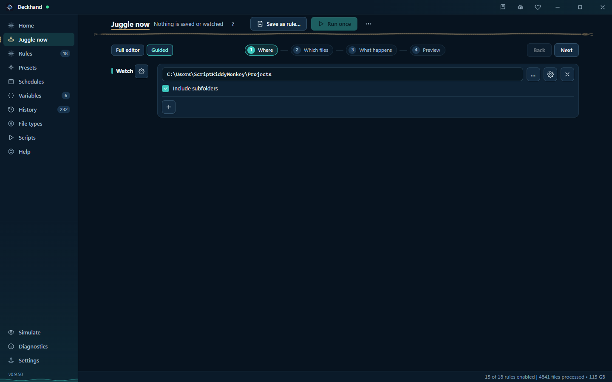

Guided and Full editor
Two ways to build the same rule, and where Juggle now fits.
Deckhand has two views of the rule editor. Both edit the same rule, and you can switch at any time. Deckhand remembers your choice.
Guided
Guided walks you through the rule one step at a time: Where and when (folders and schedule), Which files (If), What happens (Then) and Preview. It starts at the first step each time you open an editor. Use it for your first rules or when you want fewer things on screen. Your first rule goes through all four steps.
The screenshot shows step 1 for the rule Invoices to Documents: the description (the rule's name), the watch folder ~Downloads and the schedule, which is not set. The step bar at the top, with Back and Next, is how you move between steps.

Full editor
The Full editor shows every section at once: Watch, If, Then, Schedule, Preview and the rule options. Use it when you know what you are building or want to jump between sections. Press Full editor or Guided at the top of the page to switch.
The screenshot is the rule Installers: clear out after 14 days in the Full editor. Description, Watch and If are on one page, with the list of files the conditions match right now (9 of 18) under the conditions. Then and Schedule follow below when you scroll.

Juggle now
Juggle now uses the same widgets as the rule editor for a job you do once. You pick the folders, say which files (If) and what to do (Then), then press Preview. Nothing is saved as a rule. Nothing changes until you press Run.
The screenshot shows step 1 of Juggle now: the folder Projects, with Include subfolders ticked. The title says Nothing is saved or watched, and Save as rule... is in the toolbar.


If the work turns out to be worth keeping, use Save as rule... or Save as preset.... Both ask for a name. If a rule (or preset) with that name already exists, the dialog says so and the button changes to Save anyway. Press it to save a second one with the same name, or change the name. Names are not unique in Deckhand, so give rules names you can tell apart. The command line and AI clients identify a rule by its id for that reason.

Useful steps while editing
- Watch: add the folder or folders. Use a portable path such as
~Downloadsif the rule should follow the Windows user. - Preview: see what would happen. Test one file... inside Preview picks a single file and shows exactly what the conditions and actions would do with it, without changing it. See Preview, Run and Undo.
- Save: saves the rule. The play switch is disabled while the rule has unsaved changes. If you rename a rule to a name another rule already has, Save warns once and then offers Save anyway.
- Switch on: starts watching (Start watching).
Selecting several rules
On the Rules page, Ctrl+click toggles a rule, Shift+click selects a range, Ctrl+A selects everything shown. With two or more selected, a bar offers Enable, Disable, Duplicate, Move to group, Export and Delete. Delete asks first and lists the rules.
Rows have no row of buttons. Click a row to open it. Use the ... button or right-click for everything else.